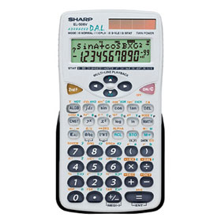

WebCal 計數機網頁
Sharp EL-506V/R
Sharp EL-506V/EL-506R是現時很多實用內置功能的 香港文憑試計數機，使用高級算式順序輸入法(A.D.A.L.)，即是將計算式依書寫的順序輸入計算機。較特別的功能有複數計算、置換計算、六種回歸分析 、標準常態分佈概率、微積分計算、三元一次聯立方程(包括二元一次聯立方程)，解聯立方程式的同時亦有計算方程組的行 列式，因此亦可以利用這個功能計算三階行列式的值，還有一點較特別的是三元一次聯立方程反覆使用更可以計算3×3逆矩陣及伴隨矩陣。與Casio fx-3650P比較，兩部計算機都是使用辛卜生/森遜法則計算定積分，但EL-506V較優勝的是可以自由設區間數目及沒有fx-3650P的積分計算問題，因此可以直接應用於香港高考應用數學中辛卜生法則的問題。另外它的操作方法更比其它同類型計數機簡單易用，至於程式方面亦有兩個程式可因應使用者的特別需要而編寫， 例如:一元二次方程、聯立二元一次方程、二項式定理、半分法及梯形法則定積分計算等等。這裡亦收集了一些實用程式供大家參考，關於程式及內置功能的用法， 請參看這裡的EL-506V程式集。
1. EL-506V程式集
2. 程式/內置功能分類目錄
3. EL-531V系列操作指引 (英文)
4. 計數機小技巧
5. EL-506V說明書 (英文)
6. EL-506V操作例題
7. 會考/高考程式建議
9. 自我檢測功能
10. WebCal 會考計數機論壇
11. 其它計數機簡介
12. 如何選購會考計數機
13. 網站索引
13. 聯絡網主